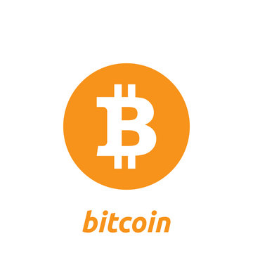
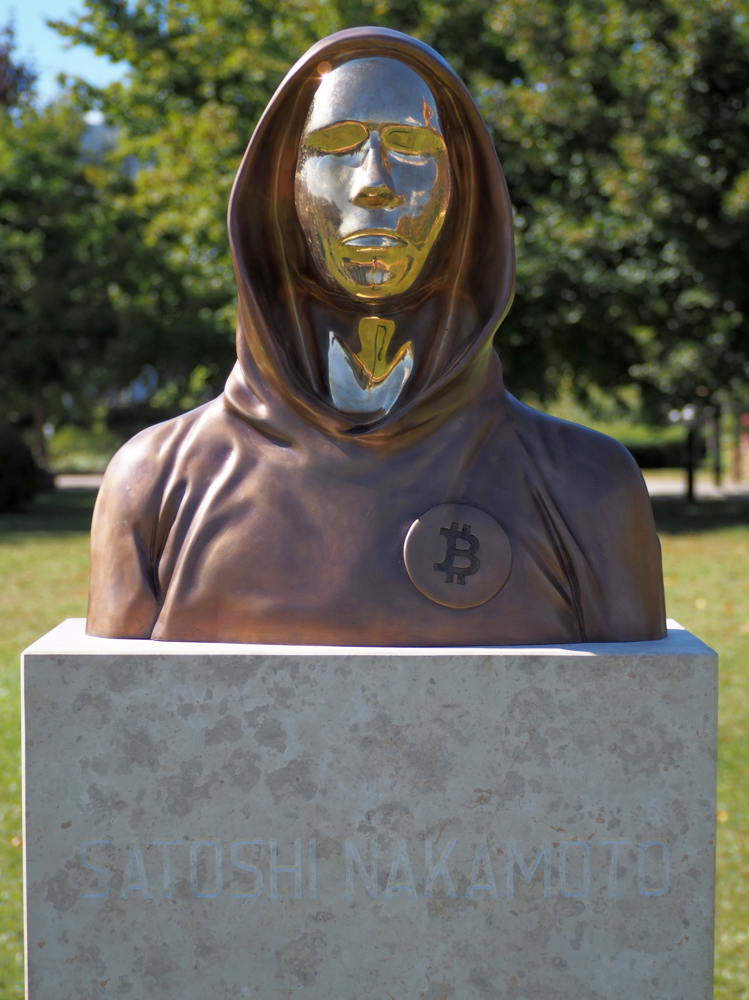
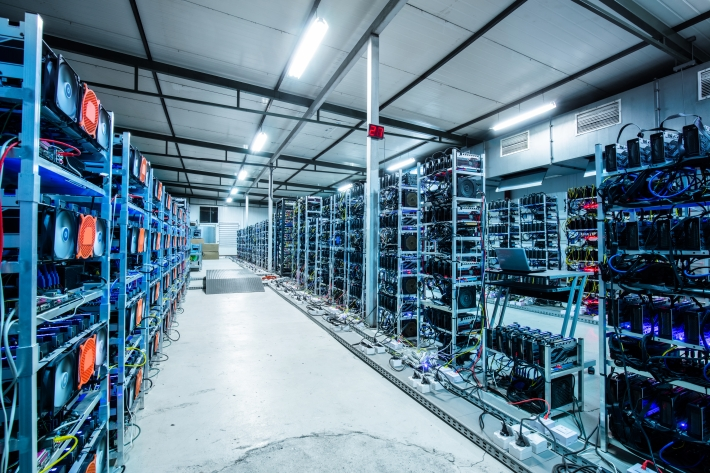

Bitcoin: A Moeda Digital
O Bitcoin é a primeira criptomoeda descentralizada do mundo, criada em 2009 por uma pessoa ou grupo sob o pseudônimo de Satoshi Nakamoto.
Ele revolucionou o sistema financeiro e introduziu o conceito de blockchain.
O que é o Bitcoin?
Bitcoin (símbolo: ₿; abreviado ISO 4217: BTC ou XBT) é uma criptomoeda descentralizada e de código aberto, um dinheiro eletrônico para transações financeiras ponto a ponto (sem intermediários)
O Bitcoin é uma moeda digital que permite transações peer-to-peer (P2P) sem a necessidade de intermediários, como bancos.
Ele é baseado em uma tecnologia chamada blockchain, que garante segurança e transparência.

Para saber mais sobre como o Bitcoin funciona, visite o site oficial do bitcoin
História do Bitcoin
O artigo descrevendo o funcionamento do bitcoin foi publicado em 2008 por Satoshi Nakamoto, pseudônimo de um programador ou grupo de programadores anônimo(s).
Uma versão inicial do software foi lançada em 2009

Em 2010, a primeira transação comercial com Bitcoin foi realizada, quando Laszlo Hanyecz comprou duas pizzas por 10.000 BTC.
Vantagens do Bitcoin
Descentralização
O Bitcoin não é controlado por nenhum governo ou instituição financeira, o que o torna resistente à censura e à interferência.
Segurança
A tecnologia blockchain garante que todas as transações sejam seguras e imutáveis.

Para entender mais sobre a segurança do Bitcoin, acesse blockchain.com
Desafios e Críticas
O Bitcoin enfrenta desafios, como a volatilidade de preço e o alto consumo de energia na mineração.
Além disso, críticos argumentam que ele pode ser usado para atividades ilegais.

Leia mais sobre os desafios do Bitcoin em coindesk
Futuro do Bitcoin
O futuro do Bitcoin é incerto, mas muitas pessoas acreditam que ele continuará a crescer e a influenciar o sistema financeiro global.
Empresas como Tesla já investiram em Bitcoin, e países como El Salvador o adotaram como moeda legal.
No Brasil, a primeira empresa a adicionar Bitcoin no seu balanço comercial foi a Yubb, startup de comparação de investimentos que alocou 15% no ativo.
Se você quiser acompanhar e a cotação e até comprar bitcoin, você pode fazer pela empresa Mercado Bitcoin
Para acompanhar as últimas notícias sobre o Bitcoin, visite CoinTelegraph
Conclusão
O Bitcoin é uma inovação revolucionária que mudou a forma como pensamos sobre dinheiro e tecnologia.
Seu impacto no mundo financeiro e tecnológico continuará a ser discutido e estudado nos próximos anos.
Para mais informações, consulte a página da Wikipédia sobre Bitcoin.